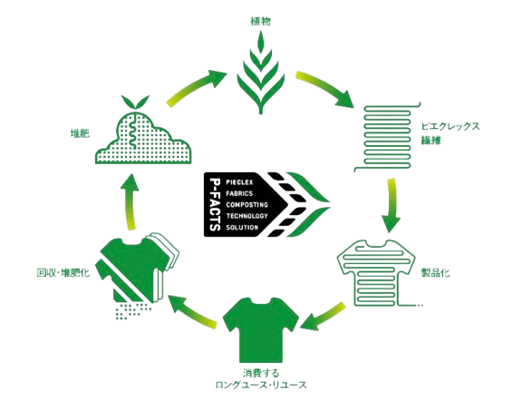
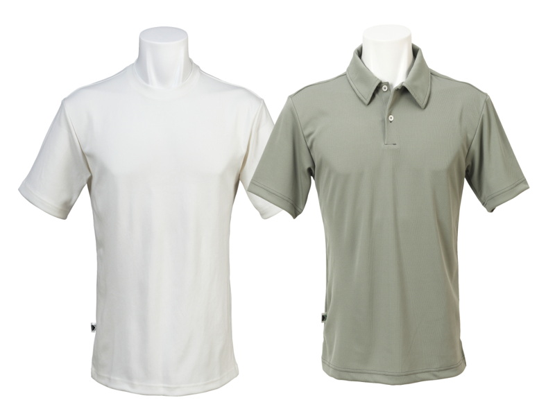
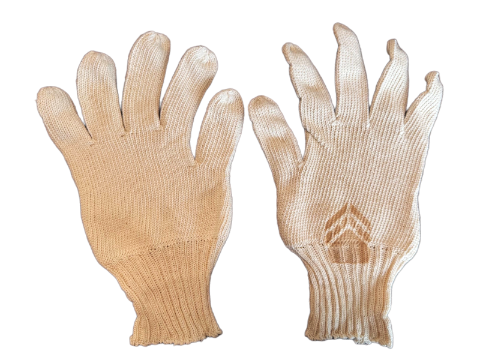
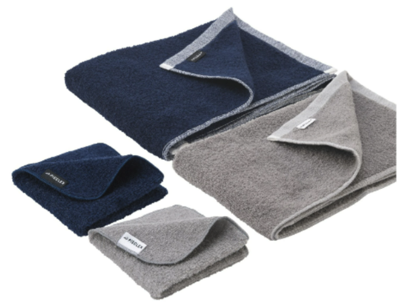
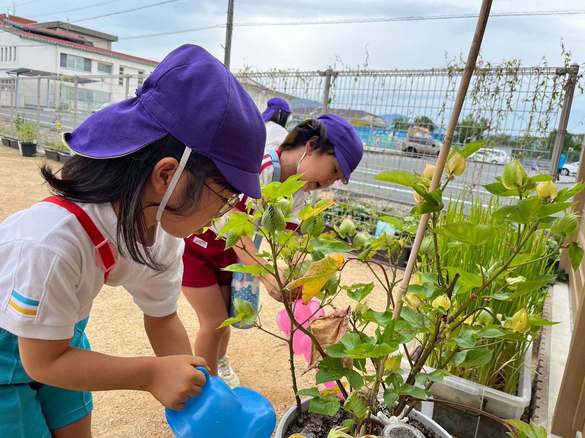

一着の服から、地域の「土」と「未来」を育てる。
地域完結型・資源循環モデルを推進する協議会「Blue Earth Alliance」が提案する、新しい循環のカタチ。
Concept
「服から土へ、土から服へ」。
私たちが目指すのは、単なるリサイクルではありません。良いものを長く着て、リユースし、着られなくなった時に初めて「資源」として土に還す。地域で着られた服が、地域の土となり、地域の農作物を育て、また地域の経済を潤す。そんな「地域完結型」の美しい循環を日本全国につくることです。

P-FACTS 循環モデル
Product Lineup — 循環型プロダクト

ユニフォーム / Tシャツ
「毎日着るものから、意識を変える」
植物由来の素材「ピエクレックス」を採用。抗菌性などの機能性を備え、役割を終えた後は土に還ります。

軍手
「消耗品から、資源へ」
現場の必需品を循環の起点に。使用後は回収し、地域の農園を豊かにする土へと再生。

ノベルティ・備品
「手渡すものにも、循環の物語を」
タオルなど、ステークホルダーへのギフトにも循環のストーリーを。
コットンオーナー制度
増え続ける耕作放棄地を活用し、コットン栽培に参加いただける制度です。企業・個人を問わず、循環の「オーナー」として耕作放棄地の再生と地域経済の活性化に参画いただけます。

Merit — 参画のメリット
01
実効性のあるSDGs
廃棄コストを地域貢献へ転換。具体的で測定可能な環境インパクトを実現。
02
ブランドストーリー
導入企業のロゴを入れた「循環の見える化」をサポート。発信力のあるESG施策に。
03
社員の意識変革
「使うことが貢献になる」という誇り。日常から始まるサステナビリティ。